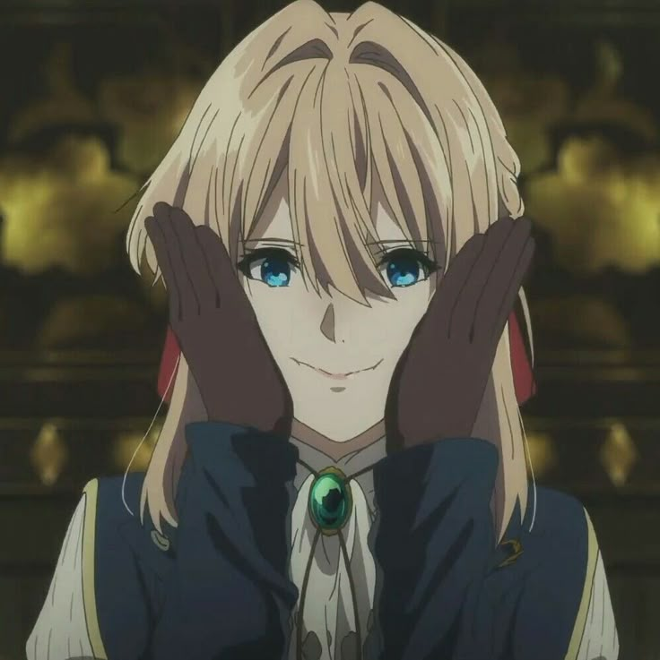
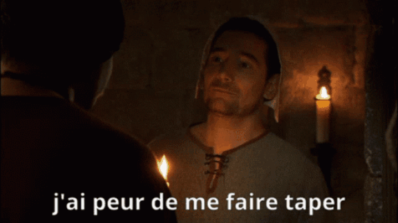

Bienvenue dans ce classement totalement subjectif des meilleurs Openings, Endings et OSTs que j'ai pu écouter. Si vous êtes pas d'accord, bah menfou + palu + ratio.
Nan sérieusement c'est pas un exercice facile, si votre opening préféré est pas là c'est que :

VIOLETTTTTTTTOOOOOOOOOOOOOOOO
La règle est la suivante: un seul soundtrack par anime.
Enjoy.
P.S : Messieurs les avocats de Sony Music, Crunchyroll et autres, voyez avec AJC moi j'ai jamais voulu que mon travail soit publié sur un repo public. Les musiques ne m'appartiennent pas et tous les droits reviennent aux exploitants et propriétaires de ces musiques.

| Classement OST | nom | Anime | Note Anime | Description | Audio |
|---|---|---|---|---|---|
| #1 | Unravel | Tokyo Ghoul | 1/10 | Je crois pas avoir besoin de me justifier, cet opening mets une claque à tous les autres. Ado l'a par ailleur reprise, et je dois avouer que je préfère sa version. Ah, et sinon, bien sûr, l'anime est horrible. Forcément, quand on suit pas le manga... | |
| #2 | A Cruel Angel's Thesis | Evangelion | N/A | C'est un hymne nationnal ce truc à ce stade | |
| #3 | Hikaru Nara | Your lie in April | 9/10 | J'entends qu'on pourrait mettre mieux sur le podium, mais j'aime trop cet opening, et je suis ravi de faire de la pub pour un anime qui n'est pas un nième shonen baston | |
| #4 | Silhouette | Naruto | N/A | Juste le son est trop bien. Pas vu l'anime, juste lu le manga donc je pourrais pas le juger. Alors, oui, on est sur un shonen baston mais pas un nième. On est sur l'un des premiers, et sur une masterclass de surcroît. | |
| #5 | Michishirube | Violet Evergarden | 11/10 | Regardez l'animé, et venez pleurer après. 'fin, vous pleurerez sûrement pour autre chose que ce classement. | |
| #6 | Nandemonaiya | Your Name | 10/10 | Il m'en fallait au moins un. J'ai pris nandemonaiya mais ça aurait pu (dû ?) être Sparkle, zenzenzense ou dream lantern. Et foncez voir Your Name si c'est pas déjà fait. | |
| #7 | We Are ! | One Piece | N/A | "Comment, t'as pas vu One Piece, wtf ?" Non, j'ai pas vu One Piece et honnêtement j'aurais pas pu tanker. Le mannga est cool though, faudra que je le repique à mon pote un de ces jours. En attendant, le premier OP est trop iconique pour ne pas le mettre. | |
| #8 | Kawaki wo Ameku | Domestic na Kanojo | 2/10 | Bah la chanteuse est juste chèvre tiers. Par contre l'anime est bien nul, rendez-moi mes 4h d'exitence. Et mon innocence au passage. | |
| #9 | Suzume | Suzume no tojimari | 7/10 | Chanteuse chèvre tiers à nouveau, juste déçu de Suzume parce que j'en attendais bcp après avoir vu Your Name. Your Name mets une claque à Suzume, je comprends même pas que y'ai des gens qui argumente ? | |
| #10 | Isabella's lullaby | The Promised Neverland | 3/10 | Ah, enfin un OST ! Généralement, quand on se surprend à fredonner un OST, c'est qu'il est vraiment bien. Isabella's lullaby est la seule chose de bien qui soit arrivé à l'anime, lisez le manga sinon parce que l'anime a du sang sur les mains avec cette saison 2. | |
| #11 | Idol | Oshi no Ko | 7/10 | 670 M de vues sur yt. Et les paroles sont vraiiiiment sombres, mais d'un côté ça met en avant tout ce qui est malsain dans le concept d'idol. | |
| #12 | Renai Circulation | Bakemonogatari | N/A | 50 000 grands garçons qui gueulent dans une arène. Peak. | |
| #13 | Kigeki | Spy X Family | N/A | J'aime beaucoup ce genre d'ending, très jazzy et en vrai assez rythmé pour un ending. Pas vu l'anime, mais vu le manga qui est masterclass. Je pensais pas dire ça un jour dans ma vie, mais je suis plutôt pour qu'on se recentre sur l'histoire et qu'on fasse un peu moins de tranche de vie sur celui-là, trop peur qu'on perde le fil rouge. | |
| #14 | Black Catcher | Black Clover | N/A | Vickeblanka juste le goat. | |
| #15 | Tanjirou no uta | Kimetsu no Yaiba | 4/10 | Pour la justice, j'ai mis un ost, parce que je trouve honnêtement que tanjrou no uta est l'un des meilleurs osts qui existe. Les openings de Demon Slayers sont tous incroyables aussi hein. Et l'animé est incroyablement surcôté. On aurait pas l'animation (et Zenitsu), franchement ça serait dur à regarder parce que niveau scénario et structure de l'histoire c'est une catastrophe. Tanjirou est une coquille vide, Inosuke est le sidekick bruyant le plus banal au monde... Les ennemsi sont numérotés donc tu te fais un compteur dans la tête comme tu compterais les jours passés en prison en scarfifiant le mur... nan vraiment c'est pas bien. Et si je parle du pouvoir de l'amitié ce paragraphe va tripler de taille. | #16 | Daddy Daddy Doo | Kaguya Sama: Love is War | 9/10 | L'opening se démarque des autres par son originalité je trouve, on est pas sur du rock, plus sur du jazz et en vrai c'est pas commun pour un opening. L'anime est masterclass sinon, une comédie réussie. |
| #17 | Naked Hero | Ranking of Kings | 8/10 | J'aime bien. Voilà. | |
| #18 | Drown | Milet | 8/10 | Je pouvais pas faire ce classement sans mettre au moins un ending autre que Michishirube. Y'en a sans doutes d'autres qui sont mieux, mais au moment de faire ce classement c'est cet ending que j'ai retenu (sinon j'aurais mis un ed de re zero ou d'overlord, parce que myth & roid) | |
| #19 | Ambivalent | Kusuriya no hitorigoto | 10/10 | C'est égoîste de ma part, mais j'ai tellement aimé le manga et l'animé que je me devais de lui trouver une ptite place. Et franchement, l'op est pas dégueu. | |
| #20 | Tabidachi no uta | Assassination Classroom | 9/10 | Clairement, il a rien a faire là niveau musical, mais n'importe qui qui a regardé AC serait d'accord pour lui trouver une place dans un top. Rah, il pleut... | |
| Mentions honorables | N/A | N/A | N/A | Tout ce que je n'ai pas pu rajouter. C'est dans le désordre, la flemme de trier y'en a trop. Sachez cependant que n'importe lequel aurrait eu une place dans le top. Ok, c'est parti : Fire force OP 1, Spy x Family OP 1, Spy x Family OP 2, Overlord OP 1, Overlord OP 2, Overlord OP 3, Overlord OP 4, Overlord ED 1, Overlord ED 2 , Overlord ED 3 , Overlord ED 4, Re:Zero OP 1, Re:Zero OP 1, Re:Zero OP 2, Re:Zero OP3, Re:Zero ED 1, Re:Zero ED 2, Re:Zero ED 3, Goblin Slayer OP 1, Nichijou OP 1, March Comes in Like a Lion OP 1, March Comes in Like a Lion OP 2, March Comes in Like a Lion OP 3, March Comes in Like a Lion ED 2, Himoutou Umaru-Chan OP 1, Demon Slayer OP 1, Demon Slayer OP 3, Demon Slayer OP 4, Dan Da Dan OP 1, Mashle OP 2, Konosuba OP 1, Konosuba OP 2, Konosuba ED 1, Konosuba ED 2, Dr Stone OP 1, Dr Stone OP 2, Fate Stay/Night Unlimited Blade Works OP 1, Attack On Titan Saison Finale OP 2, Jujutsu Kaisen OP 1, Jujutsu Kaisen OP 3, Jujutsu Kaisen OP 4, Jujutsu Kaisen ED 1, Dr.Stone OP 1, Dr.Stone OP 2, Jojo OP 1, Jojo OP 2, Jojo OP - Golden Wind, Beastars OP 1, Beastars OP 2, Call of the night OP 1, The ancient magus bride OP 1, Seven Deadly Sins OP 1, Dororo OP 1, Cells At Work OP 1, Frieren OP 1, Frieren OP 2, Frieren ED 1, Frieren ED 2, Mushishi OP 1, Love is war OP 1, Love is War OP 3, Love is War ED 2, Love is War ED 3, Ya Boy Kongming! OP 1, Assassination Classroom OP 1, Assassination Classroom OP 2, Assassination Classroom OP 3, Assassination Classroom OP 4, Assassination Classroom ED 1, et j'ai la flemme de tout mettre en fait... |
| Classement OST | Nom | Description | Audio |
|---|---|---|---|
| #1 | Michishirube | Ca rend super bien à la guitare. | |
| #2 | Across The Violet Sky | je sais plus quand ni où ce morceau de musique proc. Je sais juste que j'adore cet ost. | |
| #3 | Sincerly | Opening | |
| #4 | Never Coming Back | Cet OST est utilisé à plusieurs reprises par l'anime pour nous faire comprendre qu'une personne ne reviendra pas. Littéralement. | |
| #5 | Back To Business | J'aime beaucoup cet OST parce que déjà c'est l'un des seuls qui est vraiment enjoué, et de deux c'est l'un des seuls qui est vraiment enjoué | |
| #6 | Violet Evergarden Theme | euh ouais fallait mettre le theme quand même | |
| #7 | Adamantine dreams | oui |